English through sitcoms · Thanksgiving special
The One With the Football: How a Classic ‘Friends’ Thanksgiving Episode Teaches You Real-Life English
A troll-doll trophy, a twelve-year ban, and one stubborn snowy standoff — a cozy 90s sitcom becomes a complete English lesson on vocabulary, culture, and comprehension.
Somewhere in a New York park, two grown siblings are standing in the snow, hands locked on the same football, refusing to let go. The prize they are fighting for is not fame and not money — it is a plastic troll doll that was once rescued from the bottom of a lake and nailed to a piece of scrap wood. That gloriously absurd image sits at the heart of “The One with the Football”, the season-three Thanksgiving episode of Friends that NBC first aired back in November 1997. It also sits at the heart of a compact English lesson: the deck The One With The Football was assembled with Gemini Notebook, Google’s AI-powered notebook tool, and it turns twenty-two minutes of television into a full workout of vocabulary, culture, and comprehension.
It is important to understand why a holiday episode works so well for language learning. A sitcom delivers context, emotion, repetition, and humor at the same time, and a Thanksgiving episode adds a whole layer of American culture on top. The deck announces its promise on the cover: “Learn English with a 90s Sitcom Classic: Vocabulary, Culture, and Comprehension.” Pay attention to how much ground that single line covers — the reader is about to meet a real holiday ritual, football verbs that migrated into office small talk, and a comprehension check that feels like game day.
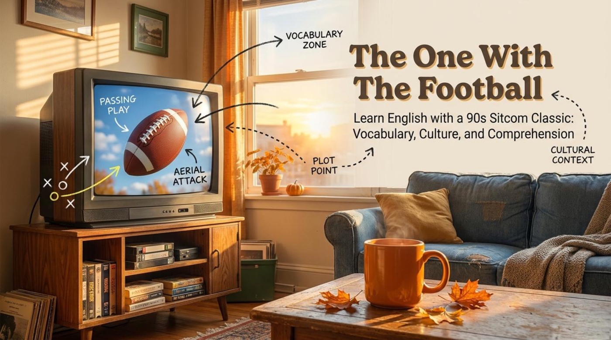
📚 The Content and Context: One Turkey of a Rivalry
A holiday ritual, explained
Before the jokes start, the lesson quietly teaches real American culture. It notes that “In the United States, families often play a friendly game of American football outside before eating their heavy Thanksgiving dinner.” The tradition makes perfect sense once the reader pictures it: the kitchen smells amazing, the turkey is still hours away, and a backyard game burns off the nervous energy of a house full of relatives.
The game itself carries a gentle name, and the deck explains the rule with a wink: “Touch football means simply tapping the player instead of violently tackling them to the ground. (Though the characters in this episode quickly forget that rule!)” The parenthetical warning is where the comedy lives — the moment this friendly game turns into the Geller siblings’ private war, every rule of politeness melts away.
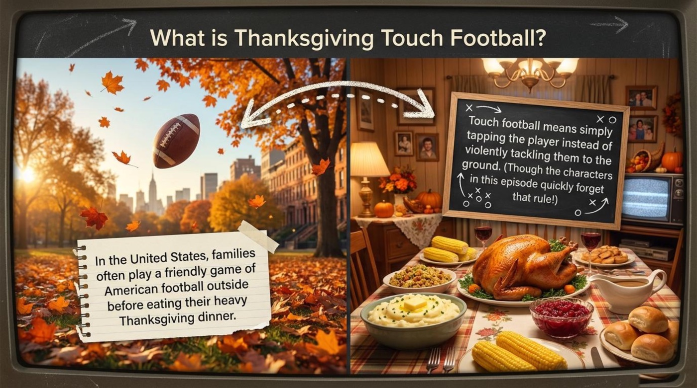
Notice the cultural logic here: touch football exists precisely so that grandparents, parents, and children can play together without injuries. When a story breaks that rule, the audience instantly understands that feelings — not football — are the real stakes.
Whenever an American show turns to November, expect a backyard football scene. The words huddle, fumble, and tackle will follow naturally, and knowing the ritual lets a learner predict the vocabulary of the scene before a single line is spoken.
Here is a concrete detail from the deck’s own answer key that proves the episode is about rivalry rather than chores: when it debunks the idea that the friends play football to avoid cooking dinner, the key explains simply that “They were cooking while the guys watched TV.” The match is not an escape from the kitchen; it is a rematch years in the making.
The prize: pure garbage, pure glory
The deck describes the trophy in two perfect lines: “A plastic troll doll, rescued from the bottom of a lake. Nailed to a piece of scrap wood.” Then it delivers the backstory with the seriousness of a sports documentary: “Ross and Monica were banned from playing football for 12 years because their Geller Bowl VI childhood game ended with a broken nose. They are playing today to win back this ugly trophy!”
The key point is that the Geller Cup is family mythology made physical. The name Geller Bowl copies the naming style of the Super Bowl, which turns a backyard game into something solemn and ridiculous at the same time. Every family has an object or a story like this — a chipped cup, a silly tradition — and being able to tell that story in another language is a genuine fluency skill.
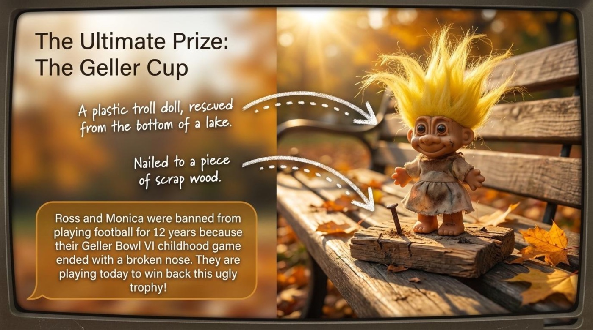
Borrow the deck’s sentence pattern to describe any family legend: banned from…, because…, playing today to win back…. Three clauses, one dramatic story — the structure works for weddings, moves abroad, and office pranks just as well as for football.
Two captains, one sibling war
The deck profiles the two teams like a real sports broadcast. The home side reads: “Captain: Ross. Style: Strategic but whiny. Secret Weapon: The Down and Out play. Motivation: Prove he is the smarter, stronger older brother.” Across the field stands the opposition: “Captain: Monica. Style: Aggressive and fiercely competitive. Secret Weapon: Accidental physical violence. Motivation: Beat Ross at any cost and claim the Geller Cup.”
Pay attention to how much characterization fits into four lines per player. Style, secret weapon, motivation — the template works for describing colleagues, classmates, or characters in any story, and it pushes a learner past flat adjectives like good and nice into precise, funny ones like whiny and fiercely competitive.
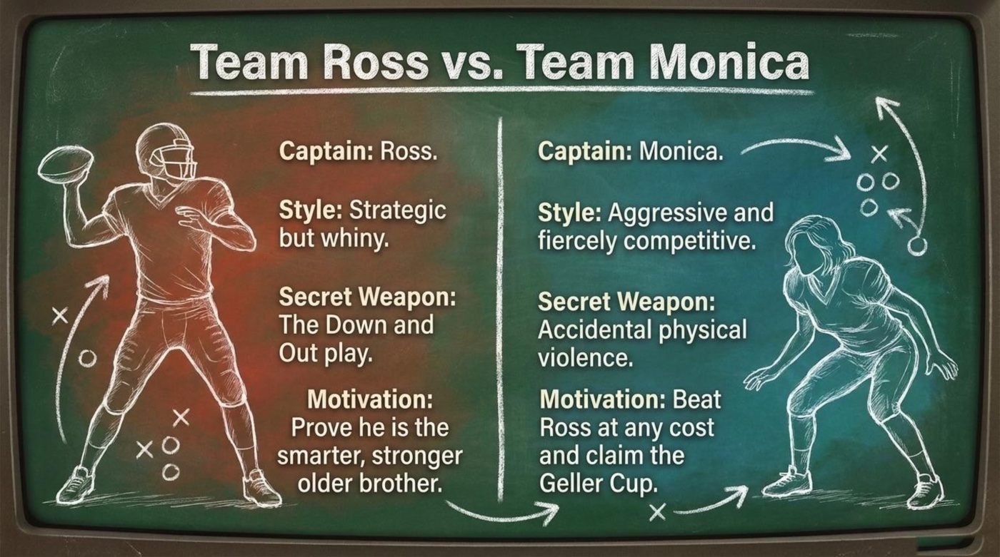
How the game actually unfolds
The middle of the episode belongs to a magnificent distraction. The deck summarizes it cleanly: “While Monica and Ross fight for the trophy, Joey and Chandler completely ignore the game to fight for the attention of a Dutch woman named Margha.” The result is as predictable as it is painful: “Because the men are so busy showing off, their team starts losing badly. Ultimately, Margha rejects both of them, calling them shallow and a dork.” Notice how the word ultimately does honest narrative work — it signals the final result of a long chain of bad decisions.
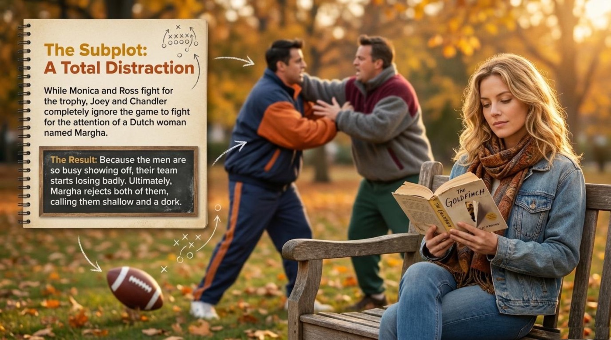
Meanwhile the quietest player gets the biggest moment of the day. “Rachel is ignored all game, told to just go long, and feels totally useless. But in the final seconds of a tied game, Monica trusts her with a desperate, slow-motion pass.” The climax is pure sitcom poetry: “She catches it! …But the celebration stops when they realize she missed the end-zone by exactly five feet.” Triumph and deflation arrive in the same breath, and the phrase by exactly five feet turns the gap between glory and irrelevance into something a viewer can almost measure.
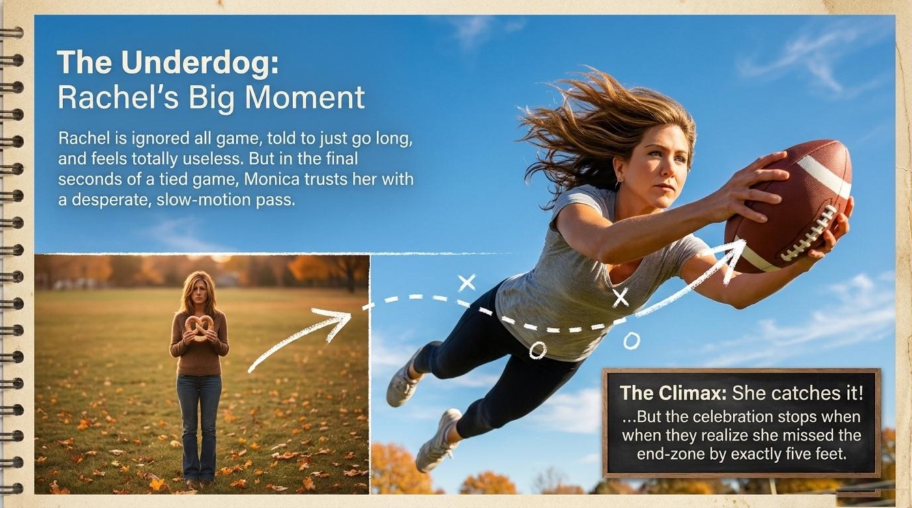
The ending stays true to family dinners everywhere. “The rest of the friends realize that winning a childhood game doesn’t actually matter. They go inside to eat an amazing Thanksgiving dinner together.” The two captains read the situation very differently: “Ross and Monica, completely trapped by their own stubbornness, stay outside freezing in the snow, refusing to drop the ball.” The deck calls this the endless standoff, and the phrase is a gift to any English speaker who needs to describe a dispute that nobody wants to end.
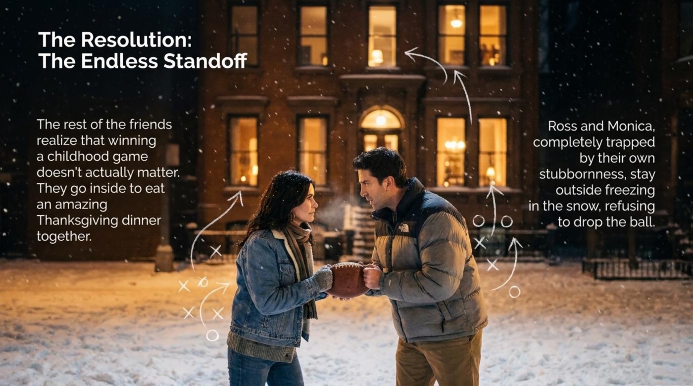
Retell any episode, film, or business case with this four-step skeleton: the setup, the subplot, the climax, the resolution. The deck’s own headings hand over the exact vocabulary for each step, and the structure keeps a spoken summary under two minutes.
💡 Vocabulary and Language Takeaways
The lesson devotes its two brightest pages to words, and the smartest thing about the selection is how portable the items are. Football language has migrated deep into offices, meetings, and daily conversation in English, so every entry below keeps earning its place long after the credits roll. The definitions come straight from the deck, and the figurative layers show where each word can travel next.
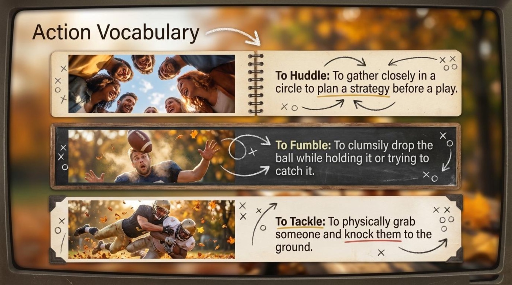
touch football noun phrase
Literal meaning: a version of American football in which a defender stops the ball-carrier with a simple touch instead of throwing them to the ground.
Figurative meaning: any friendly, low-stakes version of a normally competitive activity — the phrase suggests safety, family, and goodwill.
Example from the material: the whole episode exists because of this game, and the deck jokes that the characters “quickly forget that rule” — the phrase becomes a symbol of the politeness the plot abandons.
How the deck explains it: “Touch football means simply tapping the player instead of violently tackling them to the ground.” The contrast between tapping and violently tackling carries the entire definition in six words.
to huddle verb
Literal meaning: to gather closely in a circle, the way players do before a play.
Figurative meaning: to meet quickly and privately to make a plan — teams huddle before a product launch, lawyers huddle before a verdict.
Example from the material: the deck pairs the verb with a photo of friends leaning into a circle, faces lit with laughter — the word carries warmth as much as tactics.
How the deck explains it: “To Huddle: To gather closely in a circle to plan a strategy before a play.” The underlined phrase plan a strategy is the part that transfers directly to work English.
to fumble verb
Literal meaning: to clumsily drop the ball while holding it or trying to catch it.
Figurative meaning: to mishandle an opportunity, a speech, or a relationship — people fumble interviews, fumble their words, and fumble a first impression.
Example from the material: in the subplot, Joey and Chandler fumble their chances with Margha by showing off instead of being genuine — the deck’s line about men “so busy showing off” describes a social fumble in slow motion.
How the deck explains it: “To Fumble: To clumsily drop the ball while holding it or trying to catch it.” The adverb clumsily matters: fumbling is never deliberate, which is exactly why the word sounds so forgiving of human error.
to tackle verb
Literal meaning: to physically grab someone and knock them to the ground.
Figurative meaning: to take on a problem or task directly and with energy — tackle a project, tackle a difficult conversation, tackle the bureaucracy.
Example from the material: the touch-football rule exists to prevent exactly this action, and the deck underlines the contrast between a polite tap and being knocked “to the ground.”
How the deck explains it: “To Tackle: To physically grab someone and knock them to the ground.” The deck keeps the definition brutally physical so the figurative office use lands as a pleasant surprise.
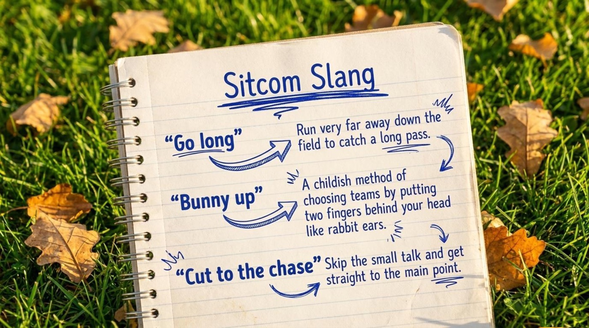
go long phrase
Literal meaning: to run very far away down the field to catch a long pass.
Figurative meaning: to be sent far from the action and asked to deliver anyway — often used for work that feels invisible or unappreciated.
Example from the material: “Rachel is ignored all game, told to just go long, and feels totally useless.” One phrase describes her entire role in the game and her entire mood.
How the deck explains it: the slang page defines it as “Run very far away down the field to catch a long pass,” and the episode shows the emotional cost of hearing it all day.
bunny up slang phrase
Literal meaning: to put two fingers behind your head like rabbit ears — the signal for a childish way of choosing teams.
Figurative meaning: a marker of playground innocence: any rule invented by children, on the spot, defended with total seriousness.
Example from the material: the slang page presents the phrase with a straight definition and a playful font — exactly the tone the episode uses for its childhood flashbacks.
How the deck explains it: “A childish method of choosing teams by putting two fingers behind your head like rabbit ears.” The phrase childish method politely warns the learner that this is friendship-group English, not boardroom English.
cut to the chase idiom
Literal meaning (origin): in old film scripts, to skip the dialogue and jump straight to the chase scene.
Figurative meaning: to skip the small talk and get straight to the main point — the politest possible way to hurry a conversation.
Example from the material: the slang page gives the meaning in one clean line, and the phrase itself would make a perfect caption for Margha’s decision at the end of the subplot.
How the deck explains it: “Cut to the chase: Skip the small talk and get straight to the main point.” The deck’s own phrasing is a ready-made model sentence for the learner’s next meeting.
These seven items share one theme: competition wrapped in friendliness. The deck chooses words that describe both the game on the field and the game between the characters, which is exactly why they deserve to be memorized as a set rather than as a random list.
Flip through the key terms
The cards below hold the core vocabulary of the lesson. Click a card or press Enter on it to turn it over and find the literal meaning, the lesson context, a quotation from the material, and a note on why the term matters.
📌 Deeper Meaning: Metaphors and Symbols
The Geller Cup: a trophy that means everything
A cup made of a troll doll and scrap wood is a joke on the surface and a thesis underneath. The deck’s description — “A plastic troll doll, rescued from the bottom of a lake. Nailed to a piece of scrap wood.” — plays the object for laughs, while the same page insists the siblings are playing “to win back this ugly trophy!” The symbol teaches that the value of a prize lives entirely in the story attached to it, and families run on such stories. For a language learner, the lesson is practical: the words that describe beloved, ridiculous objects — ugly, rescued, nailed to — are the words that make personal storytelling vivid.
The touch rule: politeness under pressure
The deck’s little parenthetical — “Though the characters in this episode quickly forget that rule!” — is the sharpest piece of cultural analysis in the whole lesson. Touch football is civility made into sport, and the instant the Gellers touch the ball, civility evaporates. The broken nose of Geller Bowl VI and the five-foot miss of the final play both grow from that single broken rule. The symbol reminds the reader that the episode is really about how thin the layer of good manners is whenever family pride steps onto the field.
Five feet short: how close “almost” really is
Rachel’s catch is the emotional center of the episode, and the deck measures its tragedy in the most precise units available: “…the celebration stops when they realize she missed the end-zone by exactly five feet.” The number does the storytelling. The image of a triumphant catch that counts for nothing becomes a metaphor for every near-miss that deserves celebration anyway — and it hands the learner a beautiful pattern for telling stories about attempts that fell just short: caught it, missed the… by exactly…
The snowy standoff: pride versus dinner
The final image of the lesson is two people freezing in the snow while their friends eat turkey inside. The deck’s phrasing — “completely trapped by their own stubbornness, stay outside freezing in the snow, refusing to drop the ball” — turns the standoff into a universal portrait of pride. The word trapped is the key: nobody is forcing the captains to stay outside, which is precisely what makes the image both funny and quietly sad. Against them stands the deck’s warmest sentence: “They go inside to eat an amazing Thanksgiving dinner together.” The dinner inside the house is the symbol of everything that actually matters.
🎯 Comprehension Check: Prove Your Game-Day Knowledge
The deck closes with a true-or-false board, a set of short-answer prompts, and an answer key spread across its final pages. The interactive quiz below rebuilds those same challenges and adds a few vocabulary twists: instant feedback lights up every answer, a live score counts the catches, and the row of dots tracks the whole drive. Read each question, choose the most confident option, and watch the board turn green.
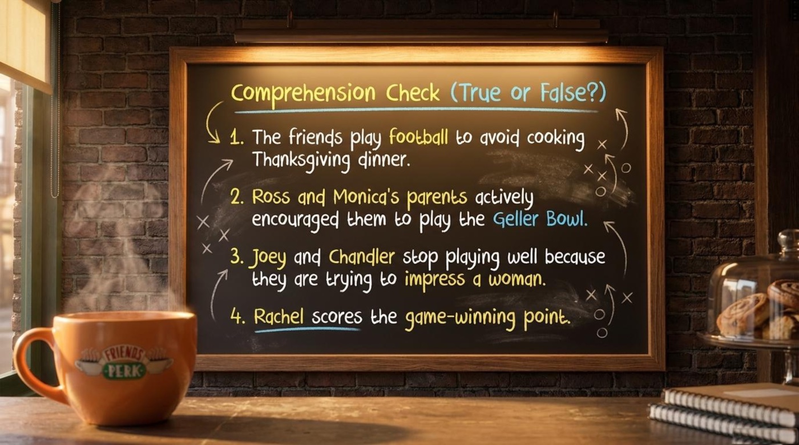
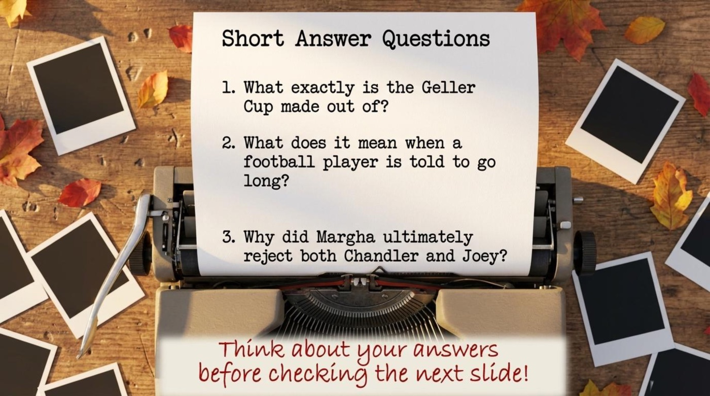
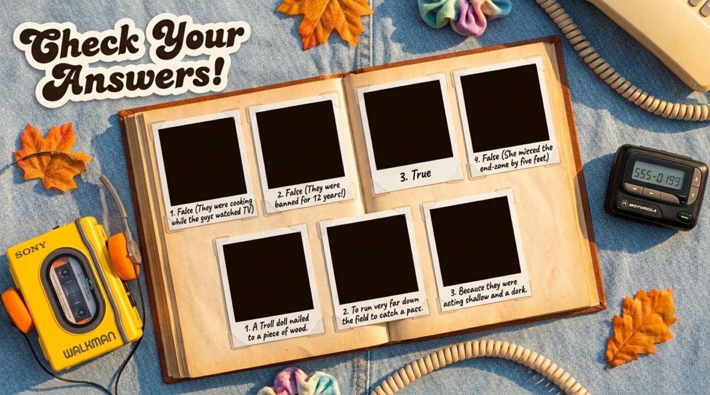
🏆 The Final Whistle: What the Geller Cup Teaches
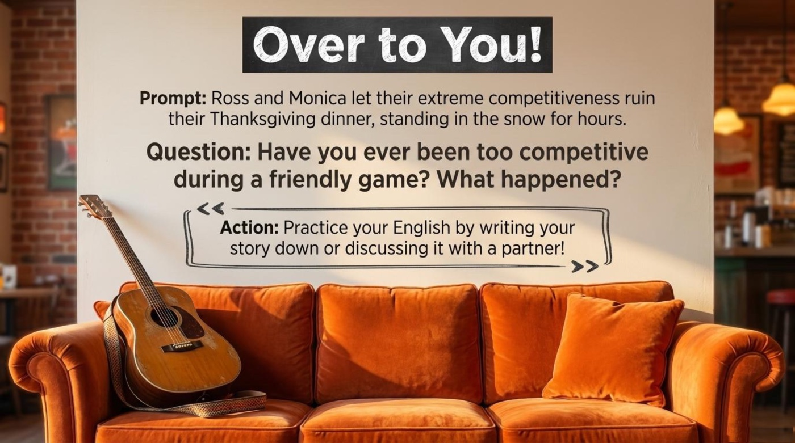
The deck hands the microphone to the learner on its last page. The prompt sets the scene one final time: “Ross and Monica let their extreme competitiveness ruin their Thanksgiving dinner, standing in the snow for hours.” The page then invites every reader to revisit a moment of being too competitive during a friendly game, and its action line turns that memory into practice: “Practice your English by writing your story down or discussing it with a partner!” A story like that already sits in almost everyone’s memory, waiting to be told in a new language.
The main takeaway comes from the episode’s quietest moment, and it deserves a second reading: “The rest of the friends realize that winning a childhood game doesn’t actually matter. They go inside to eat an amazing Thanksgiving dinner together.” Perfection in English is the snowy standoff — the endless, freezing refusal to let go until every sentence is flawless. Progress is the warm dinner inside. Rewatch the episode with subtitles, return to the vocabulary pages, and use huddle, fumble, and cut to the chase in a real conversation this week. Then write down the story of one game where pride beat the scoreboard, exactly as the lesson’s final instruction encourages: practice, discuss, and let the language stay a friendly game rather than a fight over a troll doll.